Chapter 3: Constructing a Model

C O N S T R U C T I N G A M O D E L
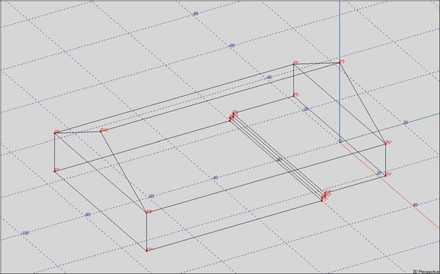
41
EASE 4.3 User’s Guide & Tutorial

Chapter 3: Constructing a Model
Naming a Project
Now it is time to begin a new project. Open EASE and either select the File pull down menu in the Main menu bar and choose New Project or use the Desk Top icons (Start working/Create Project/Create Empty Project). Either method will open the Project Options win-dow shown below.
We will be doing several tutorial models and it would be nice to have them stored in the same "Tutorial" folder. To accomplish this, insert "Tutorial" in the Hall field. Then insert "Model_1", the name of the room we will be building, in the Project File Name field. This will create a Tutorial folder in the location shown in the Project Path field and store all the files we will be creating in that folder as Model_1.
Note that in the window shown below the files are being saved in the Documents and Settings directory on the computers C: drive, the MS recommended location.
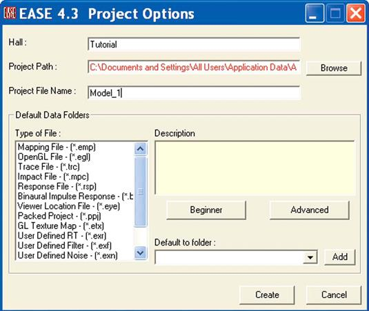
Let's accept the default settings for the Default Data Folders by making no changes in this section of the window and clicking on Create.
This will bring up the prompt shown below.
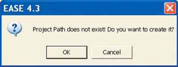
Press OK and the folder will be created.
42
Chapter 3: Constructing a Model

.Now, go to the Edit pull down menu and select Project Data or use the desktop Room Edit/Edit Data icons to open the blank Edit Project window shown below.
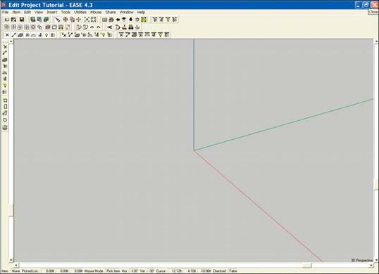
It is important to note at this point that any work done on a project under Edit Project will not be saved unless the changes are first checked under Edit Project, which automatically sends the changes to the Main program and then saved in the EASE Main program. This is where the F6 Apply and Save key command comes into play. It checks the data, sends the changes to the EASE Main program and saves them to protect against your work being lost if you inadvertently exit the program.
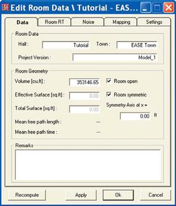
Before we actually start to build the model there are several setup parame-ters we should check. Right click on the blank screen to open the Mouse Menu. Then select Room Data to open the Edit Room Data window. Open the Data tab. Then type in the project's name (Model_1) in the Project Ver-sion field, its location in the Town field and add any notes concerning the project you would like to store with it.
We should note here that the Hall name would be the same as the Project Version name, if only one project was going to be stored in the Tutorial folder. But, we wanted to provide for storing several models in the Tutorial folder. Hence, the names are different. Both names can be as long as 40 characters.
Next, make sure the Room Open and Room Symmetric boxes are checked. Room modeling is normally done in the Room Open mode, since when the Room is Closed (not open) the program expects the room to be complete and routinely checks for Holes, missing Faces, Non-Planar Faces, etc. whenever you check data or exit the program. This generates numerous Error Messages when the model is under construction and many elements are missing.
43
EASE 4.3 User’s Guide & Tutorial

The way to prevent most of these messages is to do the modeling in the Room Open mode and then “Close” the Room after it is complete. In the Room Open mode, the program mainly checks for Non-Planar Faces (Faces that are not flat). When the Room is Closed, the Check Data operation is far more detailed.
When the Room Symmetric mode is on during room modeling, EASE will automatically add mirror image Vertices, Edges, Faces, Loud-speakers, Audience Areas, Listener Seats, Lamps and IR Devices . This cuts the modeling time in half as you only have to model one side of the room; EASE puts in the other side for you. It is common practice to first model all symmetrical aspects of the room while in the Room Symmetric mode and then switch to the Non-Symmetric mode to add any non-symmetrical items.
We’ll look into the Mapping and Settings tabs later. For now, the changes we made are sufficient. Click OK to approve the changes.
Loading Loudspeaker and
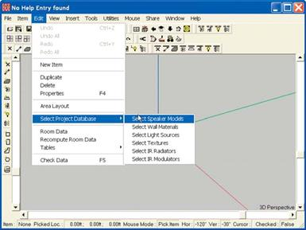
Wall Material Databases.
Now would be a good time to become familiar with the Speaker and Wall Material databases.
We don’t need to load the Wall Materials and Loud-speakers we will be using in this project at this time, since we’ll have the opportunity to load them individu-ally as we construct the model and add Walls (Faces) and Loudspeakers (Speakers) to the Room. However, before we start the Model we should have a good idea of what Wall Materials are used in the Room and what Loudspeakers we would like to try out to see how well they will perform, and it’s usually more efficient to build the project’s data base at this time.
In the Edit Project window select Select Project Data-base/Select Speaker Models from the Edit pull down menu.
When the Select Project Database/Speaker Models window opens, browse to EASE40Data/Global Speak-ers40/ and the Manufacturer whose loudspeaker(s) you intend to use.
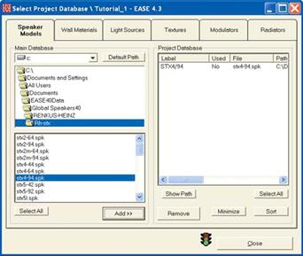
Select a loudspeaker model and press Add>> to load the Loudspeaker into the Project Database. Repeat the process until you have selected all the loudspeakers you plan to use in the project. Note that you can select multiple loudspeakers at the same time by holding down the left mouse button and scrolling or by holding down the Ctrl key while selecting different loudspeak-ers.
Then press Select All in the Project Database side of the window and press Close to exit the database.
We will be using the Renkus-Heinz STX4/94 in our ex-ercise, but feel free to use other loudspeaker(s) if you want.
44
Chapter 3: Constructing a Model
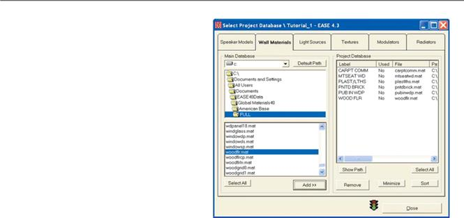
Follow the same procedure for Wall Materials only start by selecting Select Project Database/Select Wall Materials from the Edit pull down menu.
A listing of the Wall Materials we will be using in this exer-cise can be found on page 48. The window to the right shows them inserted into the database.
Similar procedures are used to load Bulbs, Textures and IR Devices into the Project Database.
Printing the Wall Material Database
The Wall Material abbreviations can be a little difficult to translate until you become familiar with them. Many users have found that having a printed copy of the complete Wall Material database makes finding and selecting the right material much easier and faster
To print a copy go to the Main Ease window and use the File pull down menu to open the IMEX Import/Export program module. When the IMEX program opens select Full Wall Material Inventory from the the Edit pull down menu.
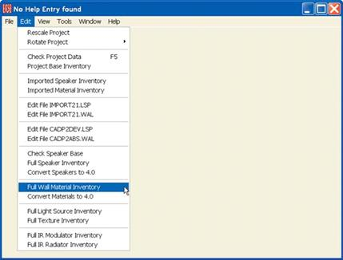
This will open a detailed listing of all the Wall Materials (refer to the graphic on next page). To print the list select Print File from the File pull down menu.
45
EASE 4.3 User’s Guide & Tutorial
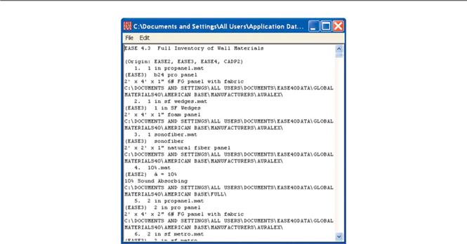
Room Modeling Techniques
One of the first steps in modeling any room is to form a clear picture of the room, either on paper or in your mind. A few minutes studying the information you have to work with and sketching the room can save you hours of modeling time. EASE offers several methods of mod-eling a room and deciding what method to use is an important decision. You need to have a clear idea of how you are going to proceed be-fore you start.
The Prototype method is based on the use of pre-built prototype rooms that can be easily resized and otherwise modified. This method is a great time saver, when your room is similar to one of the Prototypes. We’ll investigate the use of Prototypes later.
EASE also has the ability to create a number of complex shapes, such as cubes, domes, cylinders and pyramids. If your room has curved surfaces or includes columns, you'll want to consider using Create Shapes as a means of reducing the modeling time. Examples of the use of Create Shapes in constructing complex rooms can be found starting on page 106.
If the room you are about to model is similar to one you have done before, saving the existing room under another name using the Save As command and then modifying it is another possible way to save time.
You can also import 3-D models from Sketchup or AutoCad into your project and use them as the basis for your model.
Last, but not least, the model can be built point by point (Vertex by Vertex) and Face by Face until it is completed using x, y, z coordinates. It's also possible to start with one method, Prototypes for example, and then add unusual features with Create Shapes and finish the model using the x, y, z coordinate method.
Your choice will depend upon how close one of the prototypes or existing rooms is to the new room and on how detailed a model is needed. In the early stages of a project, for example, only a quick look at the direct sound coverage offered by the loudspeaker system being considered may be needed. This doesn't require a detailed model.
Another consideration is who will be looking at the printouts. There is no reason to spend a lot of time including in your model minute room details like doors and windows that usually don't materially affect the overall acoustics, unless you want to impress a client with a nice looking model. Another factor to consider is whether or not the room is symmetrical. If it is, the EASE symmetry feature can cut your modeling time in half. You enter an item on one side of the room and EASE will place an identical one on the other side of the room.
Since the x, y, z coordinate method is used to modify the rooms in the other methods, we will use this procedure to construct our first
46
Chapter 3: Constructing a Model

In the X, Y, Z coordinate method each surface area (called a Face in the program) is constructed by connecting together the points (Ver-tices) which outline its area. The points (Vertices) are identified by their location in the x, y, z coordinate system. The 3D drawing of a 2 foot square cube shown below illustrates the coordinate system.
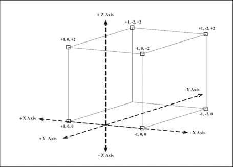
The graphic below shows how the cube drawing will appear in EASE. Note the red, blue and green x, y, z axis lines and the red dots which identify the corner points (Vertices).
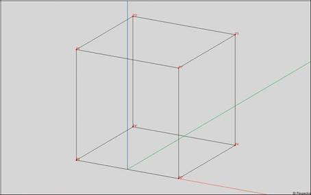
The plane of symmetry for data input in EASE can be any plane parallel to the yz plane. All values of x are possible, including x = 0, which is used in the illustration. When the Symmetry option is on, all items (Vertices, Edges and Faces) entered in the negative x part of the Room will automatically be mirrored (entered into the program) in the positive x part of the Room. The reverse also holds true; items en-tered in the positive x part of the Room will be mirrored in the negative x part.
47
EASE 4.3 User’s Guide & Tutorial

Room Entry
Many experienced users begin a project by using a red pencil to draw in the x, y, z axis and the 0, 0, 0 point on a sketch of the room or on the room drawings (blue prints). They then proceed to identify (circle in red) the points they want to include in their drawing and write their coordinate locations on the drawing. At the same time, they decide exactly how they are going to proceed; for example, exactly where they will start their model.
Now, it's time to create a room model. A sketch of the room we will be modeling appears below. The coordinates for the Vertices are shown to help you get started.
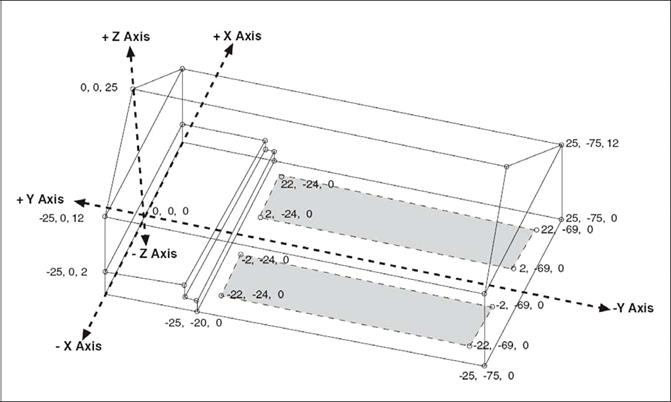
Our sample room is 75 feet long and 50 feet wide. Its walls are 12 feet high and the overall height of the room at the peak of the roof is 25 feet.. Note that the unit of measurement is feet. The stage (Chancel) is elevated 2 feet above the main floor and is reached by two steps that are 12 inches high and 12 inches deep. The shaded areas represent the seating areas.
We want the seating areas to be separate Faces, as this will allow us to easily change their acoustical properties to represent different size audiences. We'll use PUBINWDP to represent the congregation seated in pews and MTSEATWD to represent empty seats. It will also make adding Audience Areas easier when we reach that part of constructing a model.
The floors are covered with a commercial grade carpet (CARPTCOMM), three of the walls are painted brick (PNTD BRICK), the wall be-hind the stage is smooth plaster (PLAST/LTHS) and the ceiling (roof) and peaks are wood paneling (WOODFLR).
The shaded seating areas in our tutorial room could be modeled into the floor, but this a lot more difficult than simply pasting (in EASE ter-minology "Coating") them onto the floor after the room is built.
You may want to copy this page, so you'll have it ready for easy reference as you construct the model.
48
Chapter 3: Constructing a Model

The completed model as it will appear in EASE is shown below.
We could easily model this room using either the Church(A) prototype or the Auditory w/Peaked Roof prototype. We could also model it using Create Shapes by first creating a Cuboid the size of the room and then adding the roof as a Pyramid. Both approaches would quickly give us models almost identical to the sample room and needing only a few modifications to become identical.
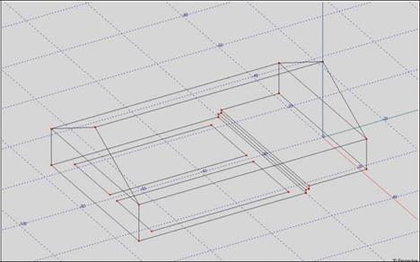
The Church(A) room, for example, has a two foot high Chancel (stage), but no steps (refer to the drawing below). The steps would have to be added for the two rooms to be identical. While considering this you would have to ask yourself how important the steps are acousti-cally.
Additionally, both the front and rear walls are drawn as a single entity and would have to redrawn as two Faces since the wall materials are different. The seating areas would also have to be added. None of these changes are a big deal once you have mastered the art of room modeling and an experienced user could easily make the changes in a couple of minutes.
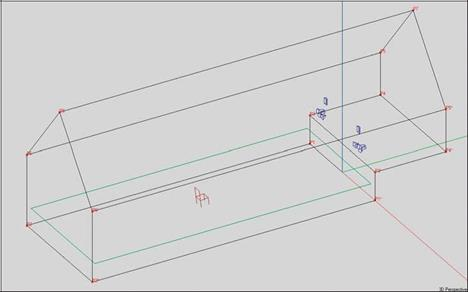
49
EASE 4.3 User’s Guide & Tutorial

The Auditory w/Peaked Roof prototype (see below) is very similar to Church(A). The main difference is that the Chancel area, although drawn in as a separate area, is not elevated two feet. It's at floor level. This room, too, could be easily converted into a room identical to the drawing.
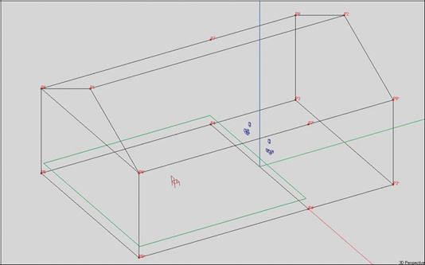
Since modifying these rooms requires knowledge of the coordinate system and EASE modeling techniques, we will first model the room using the coordinate method.
Most EASE users model a room in the same order it would be physically built; i.e., they first model the floor, then they erect the walls and after that add the ceiling/roof. The final step is to put in the finishing touches, such as the seating areas, windows and doors. Other users leave the ceiling (roof) to last. It is up to you.
We will be doing most of our modeling using the 3-D view. Experienced 3-D CAD users may feel more comfortable using the OmniView window which lends itself to more graphic modeling techniques. We’ll try this out later.
Edit Project Options
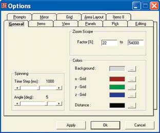
Before we start the drawing, let's check the Option settings to get a feeling for the many options available to you and to make sure they are set the way you would like to have them set. Select Options from the File pull down menu or use the Options icon in the Tool Bar section or the F9 hot key to open the Options folder.
In the General tab (see next page) change the Background color from gray to white. Use the .button next to the Background color field to open the color selector. Select white or any color you would like to use and then use Apply to look at the difference in the drawing and then go back to gray. Some users like to switch to white before printing as it re-duces the printing time, because the printer doesn't have to spend time printing the gray background. You can choose any color you like. Make your choice and then press OK.
50
Chapter 3: Constructing a Model

Next, open the View tab. Note that in the Redraw section, both While Scrolling and While Dragging are checked. This allows you to see how far you have moved the model while you are scrolling or dragging it across the screen. Unless they are checked, you won't know how far you have moved the model until you stop. You may want to use Apply to see the difference.
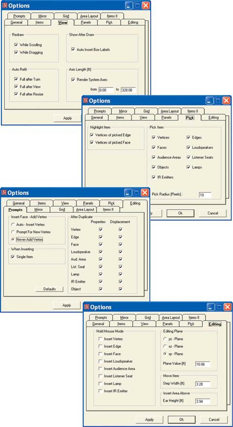
Under Auto Refit, we suggest mak-ing sure the Full after Resize box is checked. Otherwise, whenever you open the Room Editor module and Maximize the screen, the room model will need to be resized man-ually using the Full icon.
If the Full after Turn and Full after View boxes are checked, when-ever you Zoom in on a section of the model and then either turn the model or change the view to get an
even better look, the model will re-vert to its full size. You'll have to de-cide how you want this portion of the program to work.
You may want to change the Axes Length. All we want is an icon on the screen to keep us oriented. We don't need ones that are several hundred feet long. If you want, change them to a more reasonable length, 10 or 20 feet for example, and hit Apply.
Next, open the Pick tab and make sure that at least the Vertices of Picked Face option is checked under Highlight Item. Hit Apply.
Now open the Prompts tab and under Insert Face - Add Vertex change the selection to Never Add Vertex. This change prevents the inadver-tent adding of Vertices while adding a Face. Hit Apply.
Next, let's change the Step Width under the Editing tab to a much smaller value (if you will be modeling in feet, .03 feet for example.) The smaller value is useful when you are using the arrow keys to position two loudspeakers side by side. Hit Apply.
51
EASE 4.3 User’s Guide & Tutorial

And finally, open the Grid tab and make sure everything under Snap To Grid is selected and the Snap Resolution is set to a smaller value (0.5 feet is recommended). These changes will make it easier to fully utilize the graphic drawing capabilities of EASE. Then, approve all the selec-tions you have made in the Options folder by clicking on OK and return to the Edit Project window.
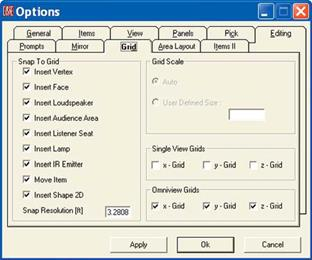
Before we start, let's do one more thing. Right click on the screen to open the Mouse Menu and then select Grid. Notice that this takes you directly to the Grid tab in the Options folder. This time in the Single View Grid section, put a check in the Z-Grid box and then hit Apply.
Note that a Grid has now been added to the screen. Many users like to do their modeling with this Grid turned On as it helps them keep their perspective. The choice of using it or not is up to you. If you want to use it, hit OK. If not, remove the check in the Z-Grid box and then click on OK.
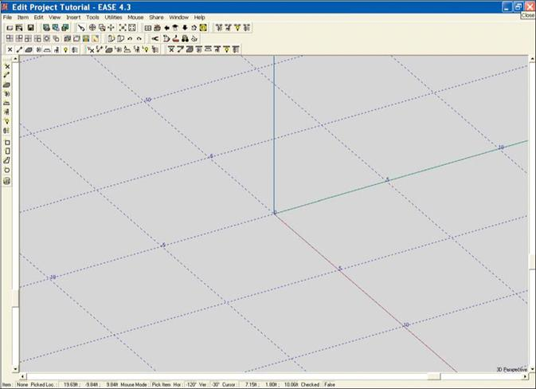
Now, open the Mouse Menu again. Notice that it also includes Stepwidth and xz-Plane Value listings. Both of these take you directly to Editing tab in the Options folder to make it easy to change them.
52
Chapter 3: Constructing a Model

Entering Vertices
The Vertices we will be using to construct our room have been circled in our Tutorial room drawing and coordinates for most of the Vertices are given. Note that the corner points under the raised stage have not been circled. They are not part of the room and won't be included in the model. We are only interested in the inside of the room.
Please note that we placed the 0, 0, 0 point in the center of the stage at the very rear of the room. In EASE we normally use either the back of the stage or the wall behind the stage for y= 0. This places the Audience Areas at negative y. This is desirable because (by de-fault) EASE aims loudspeakers along the negative y axis. We strongly recommend that you follow these conventions; otherwise some confusion (and accompanying waste of time) may result.
Let's start. Go to the Main Menu and open the Model_1 room under Edit Room. Maximize the screen if it isn't already maximized. The larger the drawing, the easier it's going to be to work. The working area of the screen will be displaying only the x, y, z axes icon, unless you decided to use the Z-Grid.
The first Face we want to enter is the main floor. There are a number of ways to enter a Face in EASE and before we finish the Tutorial we'll try all of them. For now, we'll use the basic method which is to enter the Vertices and then connect them together to form the Face. We'll be helped by the symmetry feature of EASE because we will only have to insert 2 Vertices and EASE will put in the other two.
Note: Most of the operations we will be performing can be initiated through use of one of the Tool Bar icons, by a key command or by using the Insert pull down menu. Both the Tool Bar icons and the key commands will be used throughout the Tutorial to get you acquainted with them. The Key Command will normally follow the command name in brackets, for example, [F3].
Before we do this, make sure the Show Vertex icon is activated (click on it in the Tool Bar) Unless Show Vertex is turned on, you will not be able to see the Vertices as you add them. You may also want to turn on Vertex Label. It will allow you to see the P numbers assigned to the Vertices as you add them.
Now, click on the Insert Vertex icon [V] in the tool bar and then on any spot in the screen. This will open the Properties sheet for the Ver-tex. Type in the coordinates for the first Vertex (-25, -20, 0) and then hit OK. Note that you can tab from one entry field to the next.
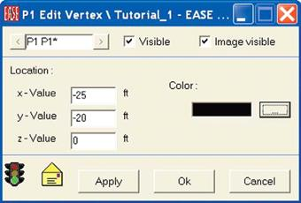
It's quite likely that after doing this you will be able to see only one Vertex on the screen, even though you are working in the symmetrical mode and EASE should have put in a second mirror image Vertex. It did, you just can't see it! Either go to the tool bar section and click on the Full icon [Home] or use the Scroll Bars [F11] to resize the drawing so you can see both Vertex P1 and its mirror image Vertex P1*.
53
EASE 4.3 User’s Guide & Tutorial

Adding the next Vertex is easy. Vertex P1 should still be selected (highlighted in yellow). If it isn't select it and then click the right mouse button and select Duplicate from the pop up Mouse menu that appears This will open the Displacement window shown below (unless under Options you changed the default settings under the Prompts tab.) It is asking for the location of the new (duplicate) Vertex.
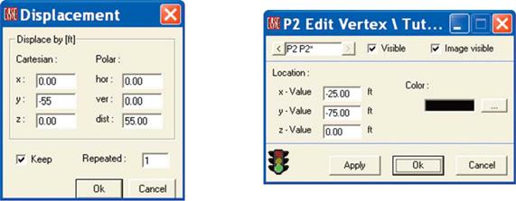
All you have to do is type in how far you want the Vertex moved; in this case 55 feet down the Y axis (from -20 to -75). Enter -55. Approving the move will introduce the Edit Vertex screen shown above giving you the opportunity to check and approve the Vertex location. This is a quick way to add Vertices, since you usually have to type in only one figure.
The Displacement screen also has a Keep check box and a Repeated field. When Keep is checked the coordinate entries are stored and appear the next time Duplicate/Displace is used. At times this can be a time saver.
The Repeated field allows you to repeat the Duplicate/Displace operation a number of times. It's not used very often with Vertices, but is an extremely useful feature when Faces, Objects and Loudspeakers are being Duplicated/Displaced. We'll work with it later on in this Tutorial.
Note that the Displacement screen shown above also has three fields for Polar Coordinates. These are used for angular displacements. If we had wanted to displace the Vertex 5 feet at a 30 degree angle, we would have entered 30 in the hor. field and 5 in the dist. field. The program would have responded by telling you how far the Vertex would be moved in the x & y direction.
We'll be working with Polar Coordinates in this Tutorial. They can be very helpful and you need to become familiar with what can be done with them.
Note: While constructing the model, you will probably notice that the coordinate numbers occasionally change slightly from the ones you entered; for example, -20 became -20.01. EASE works in the Metric system and converts to feet when the modeling is being done in feet. The variations are the result of rounding.
At this stage you'll probably be able to see all 4 Vertices, but not the x, y, z axis icon. Zoom Out [F12] [Home] until you can see the icon. It's easy to become disoriented unless you can see the Axis icon. If you aren't sure which Vertex is which, go to the Label Items tool bar and click on the Vertex icon. This will add the Vertex numbers to the screen. We suggest leaving them On.
Entering Faces
The next step is to create the Face that will represent the floor. Go to the Tool Bars and click on Insert Face [f]. Then click on Vertex P1, P1*, P2* and P2 in order. Note that a red Trace line follows the movement of the cursor after you have selected the first Vertex. Get into the habit of watching this Trace line as you enter Faces.
You will also hear a tone signal as you click on each Vertex. This is the program's way of telling you that you selected the Vertex and not somewhere close to it.
Note, if you did not previously select Never Add Vertex while setting the Exit Project Options (page 51) and missed the Vertex, the program will give you a Prompt asking if you want to add a Vertex. Since we don’t want to add a new Vertex, answer No by hitting the Cancel but-ton. The program is just letting you know you missed the Vertex.
54
Chapter 3: Constructing a Model
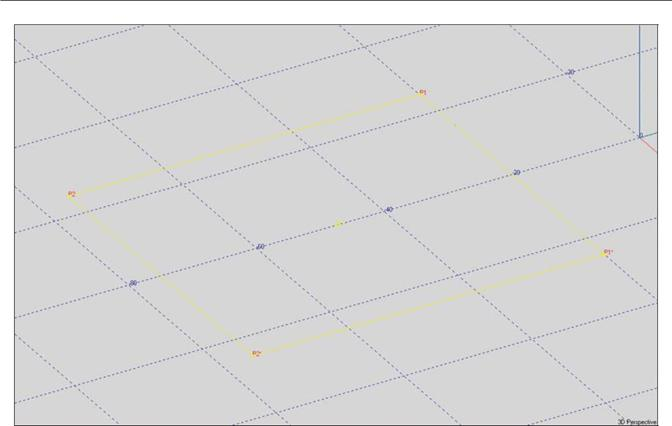
As soon as the Face is completed a Create Face Prompt will appear asking if you want to Save the Face. Note that you only had to define 3 of the edges of the Face before the prompt appeared. Ease put in the fourth one for you.
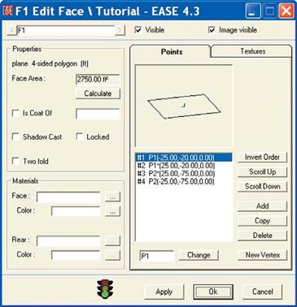
Notice that we used a clockwise rotation to enter the Face and that the Face is outlined in yellow. Our using a clockwise rotation told the program that we were entering a Face whose active (exposed) surface faced into the room as we viewed it. The yellow outline indicates that this is the way the Face is oriented.
To verify this (and to get a little practice), let's blow away (delete) the Face we just created and enter it again using a counter clockwise rotation. Answer Yes to the Create Face prompt and then OK the Edit Face window that opens. We can delete the Face by selecting it and using the Delete key on the keyboard or by using the UnDo tool in the Tool Bar. This time click on P1* first, then P1, P2 and P2* in that order.. Notice that after we finish, the Face is now outlined in white. Use the Invert Face icon in the Tool Bar to invert it or use the Mouse Menu and se-lect Invert. Note that the outline color changes from white to yellow.
Note: Many users pay little attention to the direction in which they enter the Vertices into the Face and rely upon the outline color to tell them whether it’s entered properly or not. If it’s not, they invert it using the right mouse but-ton and the Invert command.
55
EASE 4.3 User’s Guide & Tutorial

Now, reopen the Properties window for the Face. Right click on the Face and then select Properties from the Mouse Menu The properties window gives you the op-portunity to define the Face’s characteristics, such as its color and its surface material.
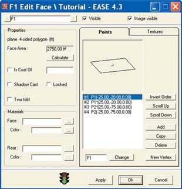
To designate the color of the Face, click in the Color field under Materials or on the . button beside the Color field and then select the color from the color chart that appears. Don’t be surprised when the color of the Face on the screen does not change. Face colors are visible only under Rendering. Because of this, some users wait to add color to the Faces until the model is complete. The choice is yours.
To apply the color change, click on either Apply or OK. Apply will make the change, but not close the window. OK will make the change and close the window. The green traffic light at the bottom of the screen indicates the Checked status of the File and shows that the file is open to accept changes. Left clicking on the green light will open a pop up screen telling you whether the data is good or not. The yellow envelope indicates that the file has been altered, but that the change has not been processed. Clicking on Apply will process the change and wipe out the envelope.
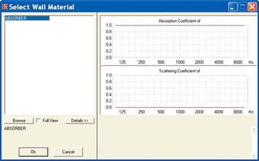
To pick the surface material, click in the white Face field or on the . button beside the Face field to open the Select Wall Material window and then select the mate-rial you want to use. You'll notice that the only material listed is the default Absorber. CARPTCOMM which is what we want isn't listed. This means you will have to use the Browse button to locate the Material database and find CARPTCOMM so you can add it to the data-base for this project.
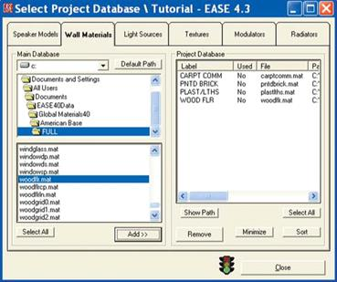
Pressing Browse will take you directly to the Wall Mate-rials folder in the Select Project Database window. Browse to the American Base and open the Full folder. Scroll through the list to find CARPTCOMM, select it and then press Add to add CARPTCOMM to the Proj-ect Database.
Follow the same procedure to add the other materials we will be using in this project to the project database.
Then return to the Properties screen for the Face we in-serted, choose CARPTCOMM and click on OK.
Don't worry about the other boxes in the Properties win-dow. We'll cover them later.
56
Chapter 3: Constructing a Model

Making Steps
Now, it's time to add the steps. This won't be as difficult as it may sound. From the room description, we know the steps are 1 foot (12 inches) high and 1 foot deep, so all we have to do is use the Duplicate feature to create new Vertices and then move the Vertices in the Displacement window. We don't even need to know the coordinates for the new Vertices.
Lets do it. Left click on Vertex P1 and then open the Mouse menu by right clicking. Select Duplicate from the folder that opens, and then change the z dimension by typing 1 into the z field and hit OK. This brings up the Property Sheet for the new Vertex complete with the co-ordinate information. All you need to do is OK it.
Warning; one thing you need to watch out for is that the Displacement window which comes up carries the displacement data from its pre-vious use. You need to check all the fields to make sure they are what you want.
Note that the new Vertex assumes the P2 designation and the Vertex previously labeled P2 become P3. When the Duplicate method is used to generate a new Vertex, EASE assigns the new Vertex the next highest number above the number of the Vertex being duplicated and renumbers all higher number Vertices. Note that the same holds true when Duplicating other items, such as Faces.
Now, right click on Vertex P2 and select Duplicate again and move the y coordinate by 1 foot (type 1 in the y box). This puts in the bottom rear Vertex for the first step as P3. To put in the Vertex for the front of the stage, repeat the procedure and change the z coordinate by 1.
If you have trouble "picking" the Vertices or have difficulty seeing them, use the Zoom tool to zoom in on them. Just click on the Zoom tool icon and then use your mouse to draw a box around the area you want. You also may want to use the Drag tool to move the drawing on the screen and the scroll bars to enhance your view of the Vertices.
Now that we gone this far, we might as well put in the Vertices at the back of the Chancel. Repeat the procedure and change the y coordi-nate by 19. Click on OK. Your drawing should now look like this.
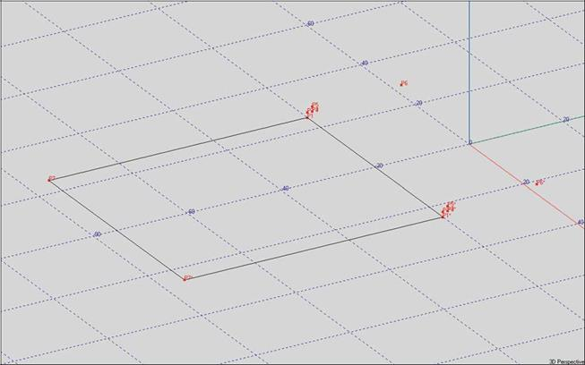
57
EASE 4.3 User’s Guide & Tutorial

The next step is to create the Faces associated with these Vertices. We'll use the same procedure we used to create the Face represent-ing the main floor. Select the Insert Face [F] icon from the tool bar and then click on Vertices P1, P2, P2* and P1* in that order. Use the Zoom feature and the Scroll Bars to get a good look at the Vertices involved. If the Vertex Labels obscure your vision, turn them Off using the Tool Bar icon.
Notice that you did not need to click on Vertex P1* to complete the Face. The program made that connection for you. Now repeat the pro-cedure to put in the bottom of the first step, the back of the step and finally the floor of the stage.
If you have trouble seeing the Vertices for the back of the Chancel (stage), use the Drag tool [d] to grab the drawing and move it across the screen. Be sure to check the outline color of each Face as its entered into the program to make sure it's properly oriented.
Note that if we were putting in more than a couple of steps, we would probably have put in the Vertices for just the first step, created the Faces and then Duplicated/Displaced the Faces to create the remaining steps. We'll practice this later in the Tutorial.
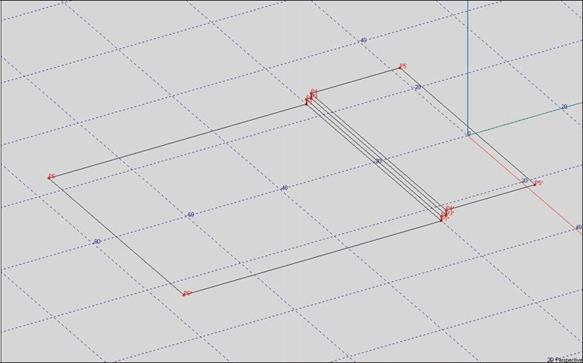
We are now ready to build the walls. The first step will be to put in the four Vertices that define the top of the walls (the bottom Vertices are already in place.) Pick Vertex P5 and click the right mouse button, select Duplicate and then change the Z coordinate by 10. Remem-ber the walls are 12" high and the stage is 2" high. Repeat the procedure with P7 to put in the other corner Vertex (P8 at -25, -75, 12).
Now, it's a simple matter of adding the wall Faces. Select Insert Face [f] from the Tool Bar and then click on the Vertices that outline the side wall facing you. ( Vertices P1, P2, P3, P4, P5, P6, P8 and P7 for example.) If you can't read all the Vertex numbers, use the Zoom tool to take a closer look at any you can't read.
Note that all the Vertices that define the wall Face must be included in the Face. Otherwise, a Hole in the model will be created and you won't be able to Close the Room until the Hole is Fixed. This is important as many of the acoustic simulations can't be run until the room is closed.
Now, check the outline color to make sure the wall is properly oriented. The wall closest to you should be outlined in white. If it isn't (and it won’t be if you followed the instructions), use the Invert Face tool to correct its orientation.
58
Chapter 3: Constructing a Model
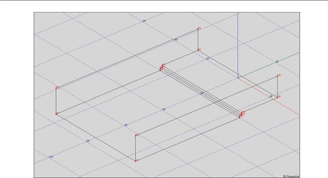
Now it's time to put in the walls at the end of the building. The Vertices are all in place, so all we need to do is to connect them together to make the Faces. Notice that you have to separately enter Faces for both ends of the room. The symmetry feature of EASE only mirrors from one side of the symmetry plane to the other. It doesn't work along the line of symmetry.
All that remains is to add the top sections of the end walls and the roof. We'll start by inserting the two Vertices that represent the roof peaks. This time lets use the Insert Vertex [Insert] [v] tool. Select the tool, click on any screen location to insert the Vertex and type the proper coordinates (0, 0, 25 for the stage end and 0, -75, 25 for the other end) into the Property Sheets.
We'll first do the top sections of the walls at the ends of the structure. Select the Insert Face [f} tool and then click on the three Vertices that make up the Face. Don't forget to select the surface material (WOODFLR) and choose a color. While adding these Faces, note the Invert Order button on the Property Sheet. This represents another spot where you can change the Face orientation.

59
EASE 4.3 User’s Guide & Tutorial

All that remains is to put in the ceiling. Use the Insert Face [f] tool to do this. Select Insert Face, then click on the Vertices defining one side of the ceiling. Don't forget to check the outline color of each Face after it's added. Your completed room should like this.

We’ve completed the basic room. Now would be a good time to turn off our computer and take a break. At this point, the work you have done hasn't been saved or sent to the Main Program module. The simple way to do this is to use the F6 key command; another way is to open the File pull down menu and select Save Project Data.
Now, close up the Edit Project module and then EASE itself. If you didn't remember to save the changes before you attempted to close EASE you saw a prompt reminding you the data hadn't been saved. Answering Yes to the Prompt will exit the program without saving the changes to the Project file. Answering No to the prompt will give you the chance to save the data by selecting Save under the File pull down menu or, by doing a Ctrl + s, or by using the Save Icon in the Tool Bar.
Nevertheless, we strongly recommend that you always do an F6 before closing down the Edit Project module and then a Ctrl S before you attempt to exit EASE. Why take a chance?
In fact, a good habit to get into is to regularly hit F6 while you are building a model.
Adding Seating Areas (Using the Coat Feature)
Open the model again, if it isn't already open. Although the Seating Area Faces that represent the seating areas could have been added at any time during the modeling procedure, we put off adding them until now so we could treat them separately. We want to "paste" them on top of the floor instead of modeling them into it. EASE calls it making one Face a Coat of another Face. The reason we want to use this method is that it is easier to paste or Coat a Face onto another than it is to model one Face into another. Modeling the two seating area Faces into the floor would have forced us to generate a number of smaller "partial" Faces; pasting the Seating Area Faces onto the floor generates only 2 new Faces.
The basic room is now complete, so let's paste in the Seating Area Faces. We'll do this the same way we originally entered the floor. The coordinates are shown in the drawing on page 48. First, Pick the main floor Face and make note of its Face number. You will need it soon. Then select Insert Vertex [v], type in the coordinates for one of the four Vertices we need to add and then OK the insertion. The other 3 Vertices can be entered individually using the Insert Vertex [v] command or by using the Duplicate/Displace method to create and position them.
60
Chapter 3: Constructing a Model

As soon as all four Vertices are added, select Insert Face [f] from the tool bars and use the cursor to create the Face. When the Properties sheet appears put a check in the Two Fold Face box. We'll start out using MTSEAT WD as the material to simulate an empty room. Don't worry about the Rear material. The rear material is ignored by EASE as long as the Face is being Coated onto another. Next, put a check in the Is Coat Of box and then click in the white field to the right of the Is Coat Of box. This will open a listing of the Faces included in the model, select F1 (the program's designation for the main floor Face) and OK the selection. Then OK the overall listing and the Seating Areas will be Coated onto the floor.
Note: You may be wondering why we went to the trouble of putting in two seating area Faces and then Coating them onto the floor Face, instead of just Coating a single Two Fold Face over the entire floor Face. The main reason is that EASE has trouble when the Vertices for the Two Fold Face and the Face being coated are shared. EASE wants to put the Two Fold Face a small distance above the Face being Coated and can't when the Vertices are common. EASE tries to correct this by shifting Vertices and strange things happen.
You may notice at this point that the Face outline is neither white or yellow; instead it's blue or orange. Orange is the default color for the foreside of a Two Fold Face. The backside is blue. If you don't like blue or orange, changing to other colors is easy. Go to the Options [F9] menu and select the Items II Tab. Click in the color box for Face Color of Picked Two-Fold and select a new color.
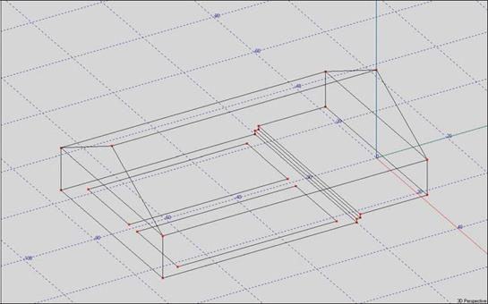
We could have also created the seating areas with the Insert Rectangle tool. In this approach, we would have gone to the z (overhead) view and used the xy grid to graphically place the Vertices. Shift + z would have opened the Grid folder in the Options menu and allowed us to turn on the grid and set its plane level to the floor level.
When you place a Face on top of another Face, the Face on top must be a Two-Fold Face and you must tell the program that you
want to Coat (paste) it onto another Face. EASE needs this information to correctly calculate the total surface area of the Room and to make sure a hole isn't put into the Room. If you simply create a Face and place it on top of another Face without using the Coat Of fea-ture, the total surface area of the room is inflated throwing off many of the calculations.
Two-Fold Faces are also used to add barriers, reflectors and absorptive panels into a Room. These do not need to be Coated onto a Face, as long as they do not touch another Face. When Two Fold Faces are used for this purpose, the Rear Face material is also taken into ac-count in the room’s surface area since both Faces are exposed to the Room.
61
EASE 4.3 User’s Guide & Tutorial

Adding Audience Areas
Audience Areas are the imaginary areas on which EASE normally maps the system's performance. They are strictly measuring planes and have no acoustical properties.
Because we included Seating Area Faces in our room model, it will be very easy to add Audience Areas. Pick one of the Seating Area Faces and then right click on it to bring up the Mouse Menu. Choosing Area Above Face will add the Audience Area and bring up the Audi-ence Area Property Sheet.. All you need to do is click on OK and the Audience Areas will be added. They will be outlined in green. Notice that the program has placed them directly above the Seating Areas at a height of 3.94 feet, approximately the height of a seated listener's ear.
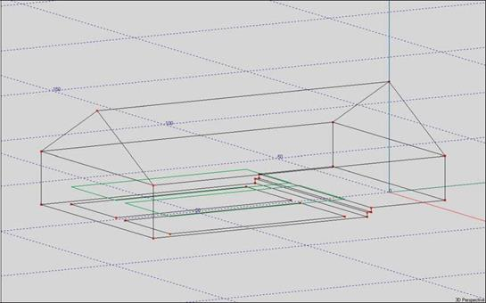
The scanning routine used by EASE in its area mapping module requires four-sided areas, so this method of adding audience areas works only if the Audience Area is being placed above a Face having four corners; i.e., a square, rectangle or quadrangle. Otherwise, the Audi-ence Area will have to be entered as a special area with four corners. Use the Insert Area [a] tool bar icon and then enter the correct X,Y, Z coordinate information into the Edit Audience Area Properties sheet.
The scanning routine also has difficulty plotting simulations on 4-sided areas that have one very short side. So, don't try to beat the pro-gram by turning a triangular area into a 4-sided one by putting in a fourth point. It won't work.
Adding Listener Seats
Listener Seats provide a convenient reference point for many EASE, EARS and AURA simulations. They represent identifiable points for in-depth acoustic investigations. They also represent good spots (seats) to sit in and look around the Room using the graphic capabilities of EASE.
Listener Seats are easy to add. Pick an Audience Area at the spot you would like to place a Listener Seat. Then right click to bring up the Mouse menu and select Seat On Area. This will bring up a Properties sheet for the Listener Seat; fill in the coordinate information and click on OK and the Listeners Seat is added to the room model. Try it; it's simple to do.
You can also add Listener Seats with the Insert Listener Seat [c] tool. Simply click on the Insert Listener Seat icon in the tool bar and then on the spot where you want to place the Listener Seat.
62
Chapter 3: Constructing a Model

You can even draw in rows of seats if you want. Instead of picking Seat on Area in the Mouse menu, choose Insert Seat Grid. This will bring up two prompts; the first asking for Seat Distance X and the second for Seat Distance Y. X is the distance between seats and Y is the distance between rows. Using 3 for X and 4 for Y will produce the graphic shown below. Notice that the seats are placed on the floor and not on the Audience Area.
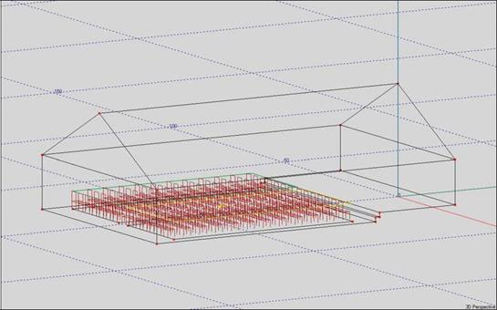
If you feel the graphic is cluttered by all the seats, you can turn off their display using the Switch Listener Seat On/Off icon in the tool bar section or delete them by using the Undo command. A way to delete most of them or another way to delete all of them is to use the Show Listener Seat Table icon. This will open a table listing all the Listener Seats; select the ones you want to delete and then under the Edit pull down menu choose Delete.
Closing a Room
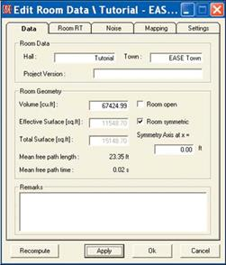
We constructed our room in the Room Open modeling mode to speed up the modeling process. Since the Room is now complete we need to “Close the Room”. EASE can not run any simulations that require RT figures, such as the D/R Ratio until the Room is closed.
Right click on the screen background to open the Mouse menu and select Room Data to open the Edit Room Data window. Select the Data tab, if it isn't already open, and click on the Room Open box to erase the check mark.
Then click on Apply and Recompute. Apply will “Close the Room” if there are no holes in it or any other problems. Recompute tells the program to calculate the Room's volume, average absorption coefficient and reverb times. Note that the program has now calculated the Room Volume at 67,424.99 Cubic Feet.
If there are holes in the Room or other problems, an error message will ap-pear giving you information on the nature of the problem.
63
EASE 4.3 User’s Guide & Tutorial

Reverb Times
To see a tabular listing of the Reverb times, click on the Room RT tab. Note that EASE has calculated RT60 times at 1/3 octave intervals from 100 Hz to 10,000 Hz using Eyring's formula. To see if Sabine's formula produces similar results, change Eyring to Sabine and click on the Recompute button.
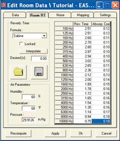
Notice that there are small differences between the calculations made with Sabine and Eyring formulas. Both of these formulas are generalized formulas, meaning that they are not perfect in all applications. Sabine is considered to be more accurate in larger rooms with homogenous distribution of the absorbing materials while Eyring yields better results in smaller rooms having a wider variety of surface materials.
You probably also noticed that under the drop down menu you used to toggle be-tween Eyring and Sabine there is a check box for RT Locked selection. This option allow you to enter measured RT data into the program and Lock it into place. The measured RT data will then be used for all calculations using RT times, instead of the data based on the wall material information and the room volume and surface area. Measured RT data is recommended, whenever measured data is available.
The File Folder and Floppy Disk Icons below the Lock check box allow you to Save and Reload (Import) different RT curves.
The drop down menu RT tab also includes fields for Temperature, Humidity and Air Pressure. These all have an effect on the calculations, so don't ignore them.
EASE users can also use the Ray Tracing module to generate RT times calculated using the Schroeder Back Integration method and then insert them into the program. The Schroeder method is generally considered more accurate than either Eyring or Sabine. The preferred method, however, is measured data whenever it is available.
If you would like to see a graph of the RT Times, close the Edit Room Data window to return to the Main menu and select Room Info/Draw RT from the View pull down menu. Graphs created with both formulas are shown below.
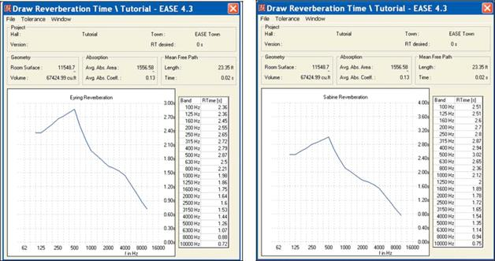
Note that even though the projected RT60 times are somewhat different, both show a definite boominess at the low end. To see how much the reverberation changes when the room is filled with an audience, change the seating area material from MTSEATWD to PUBINWDT and then go back to the RT60 graph. As you can see, the room quiets down considerably when an audience is present.
64
Chapter 3: Constructing a Model

Finding and Fixing Holes
If you made no mistakes in building the Model_1 Room, It closed without any problems. On the other hand, if you made a mistake some-where your Room probably has a ‘Hole” in it.
The first indication that you have one or more Holes in your model usually comes after you have Closed the Room and attempt to check data or exit the Edit Project module. It usually takes the form of the Error message shown below.
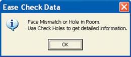
Holes are the result of violating one or more of the EASE modeling rules. They are a sign that something isn't quite right and has to be fixed before you can go on.
Finding Holes in a Room can be an exasperating experience until you are familiar with the techniques involved. Eliminating Holes involved a systematic search for the offending Face(s) or Vertices, determining the problem(s) and then eliminating it(them).
EASE 4.3 will find most, if not all, of these problems for you and then on command fix most of them for you. Even though EASE 4.3 will find and fix most of these problems for you, it's important that you be aware of the types of modeling errors that cause Holes. An ounce of prevention is worth a pound of cure.
Stacked Vertices are one common problem. Stacked Vertices is the term used to describe having 2 or more Vertices with the same coor-dinate location. They are easy to create when the Duplicate command is used to add Vertices. This leads to adjoining Faces having differ-ent Vertices instead of common ones.
Stacked Vertices can be eliminated by a simple key stroke command, Crtl + F12 which seeks them out and eliminates them. In fact, many experienced users automatically hit Ctrl + F12 before they Close a room to short circuit this problem. Try it. You can't lose.
Inverted Faces; Faces whose reflective surface is not facing into the room, are another common problem. The best way to prevent them is to check their orientation as they are being created and Invert them if they were inserted improperly.
Missing Faces are another problem. It's easy to miss inserting a Face or to inadvertently delete a Face, especially when you are working late at night and tired.
Stacked Faces are another possibility. This term describes multiple Faces stacked on top of each other. It's easy to do this when the Du-plicate command is used to create Faces.
The way to identify Missing Faces and Stacked Faces is to click repeatedly in the offending area to verify that a Face was put in and that extra Faces do not exist. The solution, of course, is to add any missing Faces and delete any stacked Faces.
Missing or Stacked Faces can also bring up a Non Zero Surface Integral Error message. Treat this Error message just as you would the Hole in Room error message.
Two-Fold Face Errors: Holes are also caused by mistakenly using Two-Fold Faces where regular Faces should be used. This can happen quite easily, if as you are building the model you put in a Two-Fold Face as a seating area and then build the walls. The Property sheet for the walls will open as a Two Fold Face and remain that way until you change it back to being a regular Face. The color of these Faces when you select them is your clue to this problem. Their border will be either white or yellow if they are a regular Face and blue or orange if they are a Two-Fold Face.
65
EASE 4.3 User’s Guide & Tutorial

Another common problem is forgetting to include all associated Vertices into a Face. Remember, when we put in the walls for our Tutorial 1 building, we had to include in the wall Faces all the Vertices associated with the steps. It is a must. If you followed the Tutorial and made sure the Highlight Vertices of Picked Face was selected (see page 51), it should be easy for you spot any mistakes by selecting the Faces and checking the Vertices. Another way is to open the Properties sheet for the offending Face and compare the Vertice listing to what should be listed. This can usually be easily done by just counting the number of Vertices. If the Face should have 8 Vertices and the listing shows only 6, you have found the problem. The solution, of course, is to delete the Face and re-enter it, being careful to include all 8 Ver-tices in the Face.
Reflectors or acoustical panels flown in the room must be Two Fold Faces and must not touch the face of any of the surfaces. If they touch, you have a hole. The obvious solution is to move them a fraction of an inch away from the surface, so they don't actually touch it. Reflectors and acoustical panels that are mounted on a surface must be Two Fold Faces that are Coated onto the surface Face.
Now, lets go through the procedure for fixing Holes in EASE 4.3. Open the Edit Project module, if it isn't already open and Invert one of the side wall Faces. Now exit from the Edit Project program. This will bring up an Apply Project Data prompt. Answering Yes will produce the Face Mismatch or Hole in Room Error Message. Clicking on OK will introduce a Data Not Checked, Save Anyway? prompt. Answering Yes will close the Edit Project module, answering No will close the prompt and return you to the Edit Project window. Answer No.

Now select Check Holes under the Tool pull down menu. This will bring up the following window.
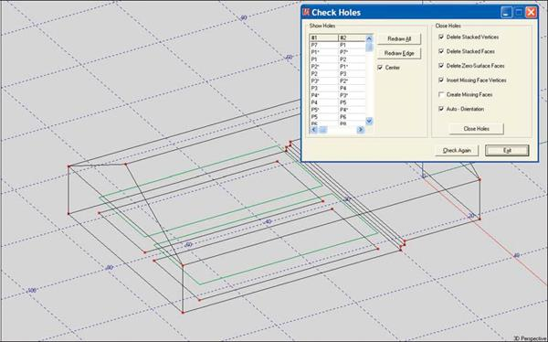
The program has identified the problem areas for you and is listing the offending Vertices and Edges. The list can be lengthy if there are a number of holes. Selecting one of the listed Vertices will prompt the program to identify the edge involved by turning it red. Sequentially clicking on the listed Vertices will help you identify the offending Face.
66
Chapter 3: Constructing a Model

Clicking on Redraw All will outline in red all the offending Faces. This can be overwhelming if a number of Faces are incorrect, so use it carefully. What it does do is show you the extent of the problem. Clicking on Redraw Edge or in one of the Vertice listing boxes will return you to the single Edge view. Notice that EASE will automatically center the offending Edge on the screen for you, if you put a check in the Center box.
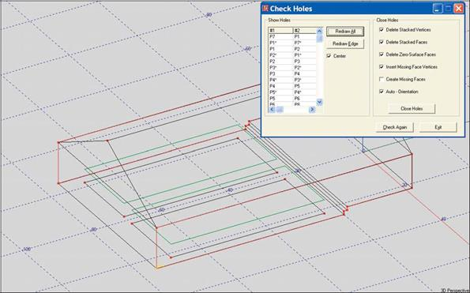
At this point, you can return to the Edit Project window just by clicking on it and then take a closer look at one of the offending Faces. If you see that it is turned around, use the Invert button to correct its orientation and then return to the Check Holes window by clicking on it. If the inverted Face was the only Hole, the Check Holes window will not open. Instead you will receive a Well Done prompt.
If inverting the Face corrected the problem, but other Holes still exist the Check Holes window will open. However, the Vertice listings asso-ciated with the Hole you eliminated will have disappeared from the listing.
You can use this technique to one by one eliminate all the Holes in the model. The easier way is to let EASE do it for you. Notice that the Close Holes section of the Check Holes window contains a listing of the modeling errors that create Holes. Press the Close Holes button and EASE will fix them for you.
The exception to this is missing Faces if your model has too many of them. There is a limit to the miracles EASE can perform. Because of this, it's wise to first let EASE fix the other modeling errors and then use the Redraw All button to view the extent of the missing Faces problem before using the Create Missing Faces command.
One other word of caution. The Auto-Orientation command will properly align all the Faces However, before using it make sure that none of the Faces are selected. If a Face is selected, the program will align all Faces with the one Picked. This doesn't represent a prob-lem if the Picked Face is properly oriented. If it isn't, the program makes sure every Face is improperly oriented and, in effect, turns the room inside out. The program doesn't see this as a Hole and congratulates you on a job well done. At the same time, however, it turns the room volume negative which interferes with (prevents) many of the mapping simulations, such as ALCons. The solution to this problem is to Invert one of the Faces so it is properly oriented, make sure it is selected and then repeat Auto - Orientation.
Helpful Hint: Shift + Ctrl + F12 eliminates all unattached Vertices. These don't cause a Hole problem, but can mess up your drawing. They are often produced when a Face is deleted and the associated Vertices are not. Many experienced users use the Shift + Ctrl + F12 key command to blow away unwanted Vertices whenever a Face is deleted. It eliminates having to delete them one by one. Another technique is to use the Shift + Delete key command to delete a Face. This command deletes both the Face and the unattached Vertices.
67
EASE 4.3 User’s Guide & Tutorial

Adding Loudspeakers
Now, it's time to add loudspeaker(s) to the Room. This means that the 'burden of proof" has now shifted to you, the designer. EASE does not decide for you what loudspeaker should be used , how many will be needed, or where they should be located. You, the designer have to make these decisions based on your knowledge and experience. All EASE can do is tell you how well your choices will work.
Select the Insert Loudspeaker [l] icon in the tool bars and then click on a location. This will open the Loudspeaker Property screen shown below.
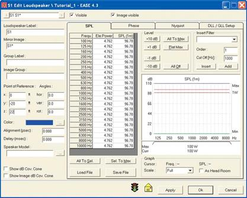
First, let's position the loudspeaker. A good spot to hang the loudspeaker would appear to be at the front of the Chancel (stage) right on the cen-ter line of the room. EASE places loudspeakers by a reference point that represents the point of rotation used during the Loudspeaker measure-ments, so we can't hang the loudspeaker at 25 feet, the height of the peak. Let's use 22 feet in-stead. Use the cursor and tab keys to insert the correct coordinate information (0, -20, 22).
Another way to insert loudspeakers is to more fully use the graphical modeling capabilities of EASE. In this case, use Shift + z to select the overhead view and open the Editing window. Set the Plane Value at 22 feet. Then, use the [l] key command to open Insert Loudspeaker and use the overhead view and grid to insert the loud-speaker on the room center line at the front of the Chancel.
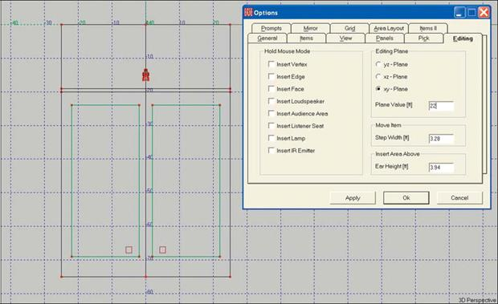
68
Chapter 3: Constructing a Model

Next, let's select the loudspeaker we plan to use.
To choose the Loudspeaker, click in the white field under Speaker Model or the . button next to it to open the Select Speaker window. It will show only Sphere Sphere is the Default loudspeaker and not what we want to use.
Use the Browse button to open Select Project Database and select the Speaker Models tab. We want to use a Renkus-Heinz STX4/94, so browse to the Renkus-Heinz/RHstx folder and select the STX4/94; then click on Add and Close. While in the loudspeaker database, you may want to select and add to the project file sev-eral other loudspeakers you would like to try. If so, go ahead and do it. Note that we included a STX4/64 in our project database.
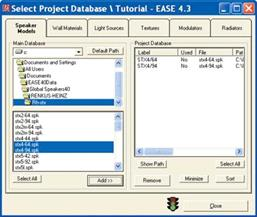
Now, select the STX4/94 in the Choose Loudspeaker window and OK the selec-tion. Then, hit OK to approve the insertion. You should now be able to see a yellow horn shaped loudspeaker symbol above the front edge of the stage and a wire-frame drawing of the STX4/94.
The spot identified as S1 at the base of the horn symbol is the reference or rotation point for the loudspeaker. It's also the spot used to Pick or select the loudspeaker. Zoom in on the loudspeaker if you have trouble seeing the spot.
Note: If you can not see the wireframe drawing, it either is turned Off in the Options folder or the database does not include a wireframe drawing for the loudspeaker you chose. If you still have the Vertex labels turned On, they may be cluttering the screen. Turn them off using the Show Vertex Labels icon. You may also want to turn off the Grid. If you do, right click on the screen, select Grids from the Mouse menu and turn off (uncheck) the Z grid.
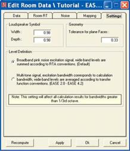
The loudspeaker symbol may be larger than you think it should be. To change the size of the symbol, right click on the screen and then choose Room Data from the Mouse menu. Select the Settings tab to bring up the Loudspeaker Symbol dialog box.
Reduce the size (Width and Depth) of the loudspeaker symbol by reducing the fig-ures in the white Loudspeaker Symbol fields, then click Apply and OK. The Apply button gives you the opportunity to view the result of the change before actually mak-ing it.
Now go to the Options window using the F9 key command or by clicking on the Op-tions button in the tool bar and then open the Items folder. Notice the three radio but-tons (round check boxes). These allow you to choose how you want the loudspeakers displayed on the screen. Try them out by selecting them one by one and observing the changes on the screen after you hit Apply.
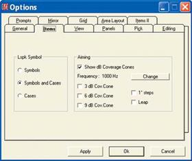
Start by turning off the Show Loudspeaker Symbols and checking the Show Loudspeaker Cases box. Then hit Apply to add a wireframe drawing of the loudspeaker. (Note: This assumes you are using a loudspeaker whose manu-facture has supplied wireframe drawings along with his data.) The loud-speaker symbol will still show as it was Picked when you started this exercise. However, as soon as you select another item, the symbol will disappear. Now, to Pick the Loudspeaker you must click on one of its Edges.
Next, make sure the Show dB Coverage Cones box is checked and then put a check in the 3 dB Cov. Cone box and click on OK. These setups act as the master control for the dB Coverage Cones we'll be using to aim the Loud-speaker and have precedence over any setups made in the Loudspeaker Properties sheets. If the cones are turned Off here, they can't be turned On in the Properties window.
69
EASE 4.3 User’s Guide & Tutorial

Aiming Loudspeakers
Now, go to the Loudspeaker Property sheet (select the loudspeaker and use the right mouse key to open the Mouse menu and then select Properties). Put a check in the Show dB Cov. Cone box and OK the change. You should now be able to see the coverage cone on the screen. The purple line represents the coverage axis. The red lines outline the minus 3 dB coverage cone. As you can see, EASE aimed the loudspeaker right down the Y axis and straight ahead.
Note that you can also turn the dB Coverage Cone On or Off by using the Show dB Cov. Cone option available in the Mouse menu.
We'll use the Loudspeaker Aiming option available in the Mouse menu to re-aim the loudspeaker. Select the loudspeaker and then hit the right mouse button to open the Mouse menu and choose Loud-speaker Aiming from the pop up Mouse menu. This will open the window shown below. You are ac-tually looking through the loud-speaker at its view of the room. The red line represents the -3 dB down points, the yellow the - 6 dB down points and the green - 9 dB down. As you can see they follow the loudspeaker's directivity pat-tern.
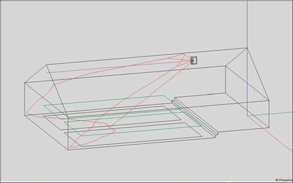
To re-aim the loudspeaker, all you need to do is click on the spot where you feel the loudspeaker should be aimed. Notice that you can not put the aiming point off to one side of the room. As long as the program is in the Symmetrical mode, a loudspeaker positioned in the symmetry plane can only be aimed down the Y axis. Everything wouldn't be symmetrical if the loud-speaker was turned to the right or left or rotated. All you can do it point it up or down, which in our tu-torial room is all we need to do.
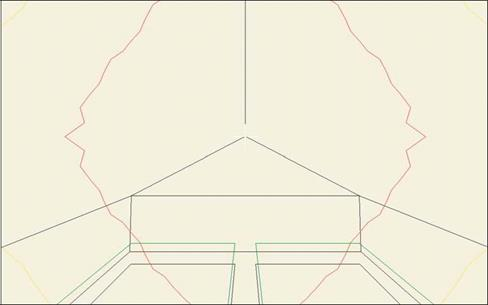
If we wanted to get around this, there are two ways to do it. One is to go out of the Symmetrical mode.
The point to remember about this is that once you leave the Symmetrical mode, it's not a good idea to try to return to it.
It's possible, but not recommended. Too many strange things can happen in the process. The other way is to move the loudspeaker a few inches off the center line. This will introduce a second mirror image loudspeaker. But, you can ignore it during the simulations by simply not turning it on.
70
Chapter 3: Constructing a Model

Mapping
Although there are several ways to aim loudspeakers, most users use Loudspeaker Aiming to quickly aim the loudspeaker(s) because it's so quick and easy to use and then they fine tune the aiming while evaluating the system's performance in Area Mapping. We'll go into the other loudspeaker aiming methods when we cover Advanced Room Investigations later in this tutorial.
The Area Mapping module is usually used for the fine tuning. There are two ways to open the Area Mapping module. One is to return to the Main Menu and select Area Mapping from the Calculations pull down menu. The other is to use the Ctrl + Alt + a key command. Either way will open the mapping window shown below. The two Areas shown are the Audience Areas we put in several steps back.
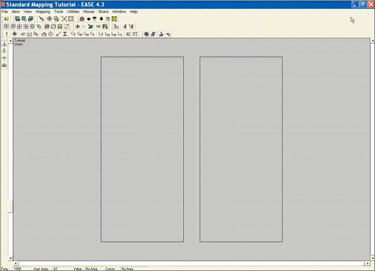
The bottom row of tool bar icons (see copy below), except for the four on the far right, are shortcuts to the wide range of simulations avail-able. The four on the far right control how the results are presented. We'll check them out later.

We are mainly interested in looking at the direct sound level in the Audience Areas at this point, so click on the Direct SPL icon in the bot-tom row of tools. This will open the setup window shown on the next page
71
EASE 4.3 User’s Guide & Tutorial

This window and the ones that follow remind you of the parameters that need to be set up before the simulation. The Settings tab is where you select the frequency of the simulation, choose what loudspeaker(s) will be used and decide upon the resolution (in feet or meters for patches and in dB for Isoline maps). You also are presented with the choice of running a Single map or of using the All Mappings feature.
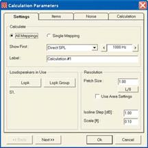
When All Mapping is selected, the program gathers all the data it needs to quickly display all the simulations avail-able at any frequency. This is a great time saver when you are doing a detailed analysis.
Let’s use All Mappings and accept the default Resolution. All Mappings takes only a few seconds longer and it gives so much more information. All we need to do is to click on the Loudspeaker button and then turn the loudspeaker On. Then click on Next to go to the second setup page (Items).
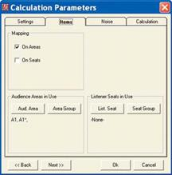
The Items window lets you choose what Audience Areas and Listener Seats will be included in the simulation.
Next, click on the Aud. Area button and make sure both Audience Areas are turned On. Then either open the Cal-culation tab or click on Next to open the third setup page.
The Noise setup window which allows you to set the noise levels that will be used in intelligibility calculations. Accept the default setting for now.
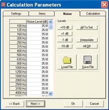
The Calculations window adds further parameters to the simulation. Here is where Shadowing can be turned On or Off. When Shadowing is On, EASE take into account the shadowing effect of any objects in the room, such as columns and balconies. When it's Off, it doesn't.
Under Interference, make sure Interference Sum and Third Octave are checked. For now, leave the default set-ting for Split Time set at its default setting.
All these options will be covered in detail later on in the Room Investigation section of this tutorial. At the moment we are only interested in aiming the loudspeaker.
Finally, click on OK to run the simulation.
72
Chapter 3: Constructing a Model

As soon as the simulation is complete, the screen shown below will appear. We'll cover it features and functions in detail under Room In-vestigations later on. For now, either minimize it or shrink it by clicking on the [–] icon in the upper left corner.
This will allow you to see the complete Direct SPL map. See below.
73
EASE 4.3 User’s Guide & Tutorial

Notice that the color patches are quite large. This is a sign the resolution we used was to coarse. Return to the Mapping Setup window by clicking on the Recalculate icon [!] at the far left of the lower tool bar and change the Patch Size to 1. Then, rerun the simulation. The reso-lution will be much improved.
Our original coverage map also showed that the loudspeaker needed to be reaimed. So, lets re-aim the loud-speaker. Return to the Edit Project win-dow and select the loudspeaker, then right click and select Loudspeaker Aim-ing. Re-aim the loudspeaker and then click on F6 to apply (send) the changes to the main module. Return to the Area Mapping window and select Acquire Project Data under the File pull down menu or use the Ctrl + o key command to update the Area Mapping module. Then rerun the simulation. If you are happy with the results fine, If you are not reaim the loudspeaker again and/or select a different loudspeaker and rerun the simulation again. It only takes a few seconds.
Note that if you had returned to the Main window and selected Area Map-ping for a second time you would have opened the area mapping module again and been able to run a second map based on the new loudspeaker aiming. This would allow you to com-pare the two maps side by side.
You can also quickly reaim, reposition or change loudspeaker models using the Loudspeaker Properties folder.
Select the loudspeaker, then right click and select Properties from the Mouse menu. Make the changes and then hit Apply to observe the effect of the changes in the loudspeaker cover-age cone. If they look good, run an-other map to see the results.
When they are satisfied with the direct sound coverage, many users then use the intelligibility maps to do the final fine tuning. Just click on the STI icon in the tool bar section and OK the setup windows as they appear.
Take a few minutes right now to become familiar with this portion of the program. Try moving the loudspeaker backwards and forward, then up and down and observe the results. Try different loudspeakers to see what effect this has. You'll have fun.
74
Chapter 3: Constructing a Model

Adding / Changing Face Colors
Now its time to take a closer look at the room we have created and the colors you selected during the modeling. Activate the Main window, open the View pull down menu and select Standard Rendering. When the Eyes screen appears, open the Dye pull down menu and choose Face Color to see the color assignments.
You will notice that the green Audience Areas detract from the view. Go to the Item pull down menu and turn off the Audience Areas (just click on Audience Area).
If you want to use the Walker, just click on the Walker icon to open its control screen. Then take a stroll around the room. (If you forgot how to use the Walker, refer to Using the Walker on page 34.)
75
EASE 4.3 User’s Guide & Tutorial

If you don't like the colors you originally chose or if you didn't bother to add them when you were building the room, it's easy to add or change them.
Return to the Edit Project Data window, Pick a Face and then use the Ctrl + F2 key command to open the color assign-ment window for that Face. Another way is to use the right mouse button to open the Mouse menu. Then select Color from the pop up menu that ap-pears to open the color assignment win-dow. Of course, you could also open the Face’s Properties folder and click on the color bar.
If you see the color you want in one of the Basic Color boxes click on it and then hit OK. It's that simple.
If you don't see the color you want, clicking on the color closest to it will take you to that color in the color bar section. Then use the cursor and/or the vertical color bar to find the exact color you want. After you have made your se-lection, click on Add to Custom Colors. Then click on the Custom Color you just created and on OK

You can now assign this custom color to any Face by selecting the Face and then reopening the color assignment window using Ctrl + F2 or the Mouse Menu.
An easy way to change the color of a number of Faces is to use the Face Table. Use the Show Face Table Icon in the Tool Bars to open the Face Table. Note that any colors you have assigned to Faces are shown in the Color col-umn. Faces which do not have an as-signed color show only a number in the Color column.
Go to the Tools pull down menu and turn on Color and Material Coupled. Then select the color you want to change by clicking on it in the Color col-umn. This will open the Color Assign-ment window. Select the new color and click on OK. This will change all the Faces having that Material to the new color. It's easy.
76